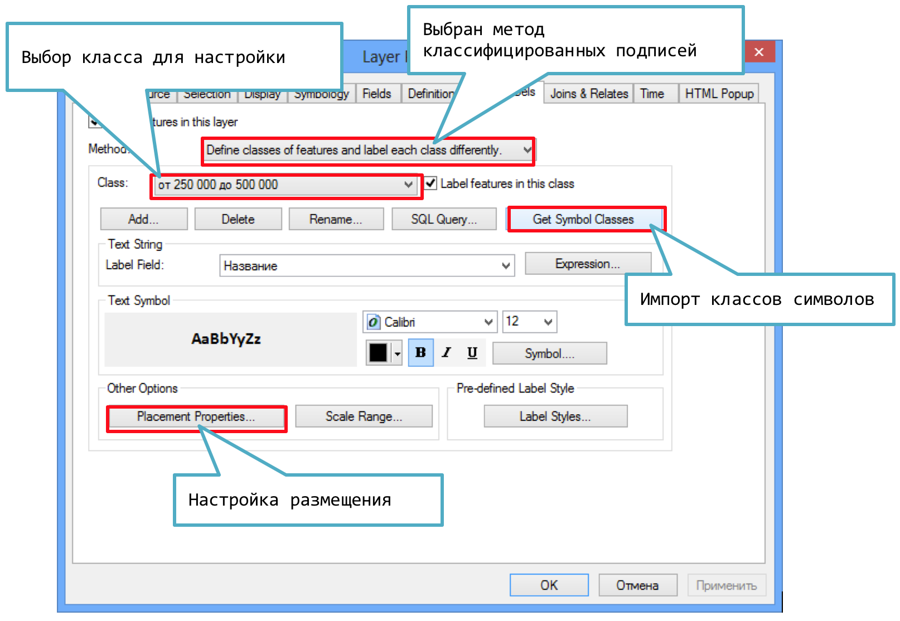

I Подписи объектов
I.1 Включение механизма Maplex
Maplex — это дополнительный модуль для ArcGIS, предоставляющий расширенные настройки размещения подписей.
Чтобы включить Maplex, откройте панель инструментов Labeling и выберите опцию в меню Labeling. Там же устанавливается режим работы:
I.2 Включение и настройка подписей
Чтобы создать простые подписи для слоя, перейдите на вкладку Label в его свойствах и включите режим Label Features in this layer. Далее настройте поле, по которому будут подписываться объекты, а также настройте внешний вид подписи:
I.3 Классифицированные подписи
Чтобы внешний вид подписи (размер, цвет и т.д.) соответствовал типу объекта, необходимо использовать классифицированные подписи. Для этого:
Установите на вкладке Labels метод отображения Define classes of features and label each class separately.
Импортируйте классы символов, нажав кнопку Get Symbol Classes.
-
Настройте внешний вид каждого класс подписи, выбирая их из списка Class

I.4 Гало подписей
Чтобы подписи хорошо читались на пестром фоне, им добавляют обводку — гало.
В диалоге настройке подписи щелкните на кнопке Symbol.
-
В появившемся диалоге выполните следующие действия:

I.5 Настройки размещения подписей
Диалог настройки размещения подписей вызывается нажатием кнопки Placement properties на вкладке Labels в свойствах слоя:

В данном диалоговом окне находятся 4 вкладки:
Label Position (Позиция подписи),
Fitting strategy (Вписывание подписи),
Label Density (Плотность размещения),
Conflict Resolution (Разрешение конфликтов).
I.6 Тип и стиль размещения
Чтобы настроить конкретный стиль размещения, нажмите кнопку Position… и выберите нужный стиль:

I.7 Разрядка букв
Разрядка букв по длине объекта включается нажатием галочки Spread Characters на вкладке Label Position:
I.8 Разрядка слов
Разрядка букв по длине объекта включается нажатием галочки Spread Words на вкладке Label Position:

I.9 Подписывать наибольшую часть
Если объект состоит из нескольких частей (например, страна включает в себя острова), Maplex по умолчанию подписывает каждую из них. Для того чтобы подписывалась только самая крупная часть, перейдите на вкладку Label Density и отметьте флажком опцию Label Largest Feature Part:
I.10 Разрешение конфликтов
За опции разрешения конфликтов при расстановке подписей отвечает вкладка Conflict Resolution в диалоговом окне Placement Properties. В частности, можно запретить удалять подпись, даже если она перекрывается другой подписью. Для этого установите флажок Never remove (place overlapping):